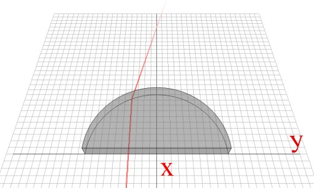
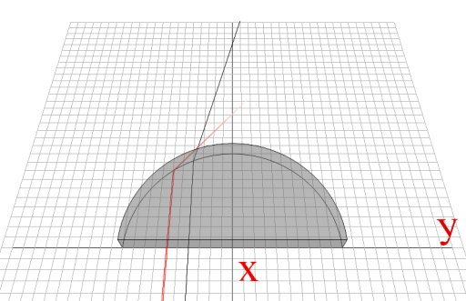
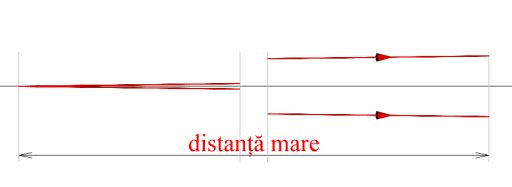
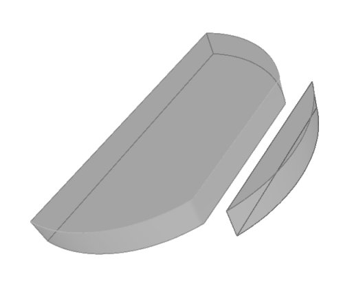

Lentile
Până acum ai analizat în detaliu ce se întâmplă cu lumina trimisă spre centrul feţei plane a unui semicilindru de sticlă. Să încercăm şi alte trasee!
 Activitatea experimentală 1
Activitatea experimentală 1
Lucrează în echipă.
Pasul 1. Folosiţi o foaie dublă cu pătrăţele. Trasaţi doua segmente perpendiculare, care se intersectează în centrul foii. Notaţi segmentul
în lungul foii x, iar celălalt, y.
Pasul 2. Aşezaţi semicilindrul de sticlă cu faţa plană în lungul segmentului y, cu centrul în punctul de intersecţie al celor două segmente.
Marcaţi pe foaie conturul semicilindrului.
Pasul 3. Trimiteţi lumina laserului, razant la suprafaţa foii, paralel cu segmentul x, la distanţa de 0,5 cm de acesta.
Observaţi drumul luminii care trece prin semicilindru. Marcaţi intersecţia cu segmentul x a drumului care a trecut prin semicilindru şi trasaţi
pe hârtie drumul luminii (figura 1).

Fig. 1.  Traseul luminii care trece prin semicilindru.
Traseul luminii care trece prin semicilindru.
Pasul 4. Repetati pasul 3 pentru distanţe faţă de segmentul y cu câte 0,5 cm mai mari.
Datorită refracţiei pe faţa curbă a semicilindrului, lumina este deviată de la traseul său iniţial. Deviaţiile sunt mai mari pentru lumina care trece mai
departe de direcţia x (figura 2).
x.'); return false" >
Fig. 1.
Deviaţia luminii este mai mare când aceasta trece mai departe de x.
Pentru lumina care trece prin semicilindru la distanţe mici faţă de direcţia centrală x, toate traseele trec aproape prin acelaşi punct al direcţiei
x!
Suntem deosebit de interesaţi de acest efect de concentrare aproape într−un punct al unui fascicul de raze paralele.
Închipuie−ţi un detaliu al unui corp aflat departe, foarte departe de tine. O mică, foarte mică parte a luminii care pleacă de la acest detaliu ar
ajunge la tine, aproape ca un fascicul paralel.

Fig. 3.
Lumina plecată de la un detaliu luminos îndepărtat, ajunge aproape ca un fascicul paralel.
Dacă lumina care ajunge la ochiul tău este insuficientă, nici nu vei şti vreodată că acel detaliu există!
Folosind însă un semicilindru de sticlă, ai putea colecta mai multă lumină pe faţa plană a acestuia, care ar fi concentrată în ochii tăi. Astfel, ai putea
afla de existenţa acelui detaliu.

Numim lentile corpurile transparente care au cel puţin o faţă curbă.
Semicilindrul de sticlă este o lentilă − una din feţele sale este curbă şi tocmai această suprafaţă produce efectul de concentrare a unui fascicul
paralel de lumină.
Din păcate, nu toată lumina care trece prin semicilindrul de sticlă este concentrată într−un singur punct − doar razele care trec la mică
distanţă de axa principală.
Semicilindrul de sticlă este o lentilă groasă − grosimea acesteia este comparabilă cu raza de curbură a feţei curbe.
Dacă ai folosi din semicilindru doar porţiunea indicată în figura 4, toate razele paralele care ar ajunge pe faţa plană a acestei mici porţiuni
ar fi concentrate aproape într−un singur punct!

Fig. 4.
Decuparea semicilindrului.
Ai obţine astfel o lentilă subţire − grosimea acesteia pe direcţia pe care soseşte lumina este mult mai mică decât raza de curbură a feţei curbe.